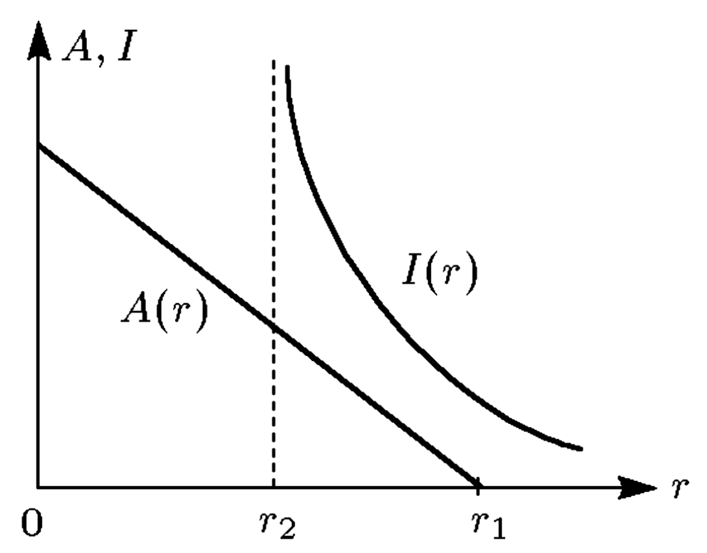

Если в результате коллективного взаимодействия общее производство
товаров и услуг в системе согласовано с общим спросом на них, то такое
состояние экономики называется равновесным.
Наиболее простые математические модели экономического равновесия
строятся при следующих предположениях:
-
совершенная рыночная конкуренция, означающая отсутствие как крупных
производственных корпораций, так и объединений работников,
могущих диктовать свои условия для всей системы;
-
неизменность производственных возможностей системы: оборудование,
производственные помещения, технологии не изменяются со временем;
-
неизменные во времени экономические интересы партнёров:
предприниматели не пытаются увеличить свою прибыль, рабочие —
свою зарплату, инвесторов устраивают проценты и т.д.
Одна из таких макромоделей — модель Кейнса —
рассматривает в качестве агентов нанимателей и нанимаемых,
потребителей и сберегателей, производителей и инвесторов,
действующих на рынках рабочей силы, продуктов и денег, то есть
распределяющих и обменивающих эти товары (труд, продукты, деньги)
между собой.
Первый макропоказатель экономики — национальный доход $Y$,
являющийся единственным продуктом, производимым в единицу времени. Этот
продукт вырабатывается производственным сектором экономики, а его
величина даётся функцией $F$, зависящей от количества и качества ресурсов,
состава основных фондов и числа занятых работников $R$
(второй макроэкономический показатель).
В соответствии с предположением 2 в состоянии равновесия производственная функция
$F$, а с нею и продукт $Y$ определяются лишь занятостью, то есть
\[
Y = F(R).
\]
Обычно считают, что
\[
F(0) = 0, \qquad F'(R) \gt 0, \; R \gt 0, \qquad F''(R) \lt 0, \; R \gt 0.
\]
Она обладает свойством насыщения — с ростом $R$ выпуск растёт
всё медленнее. Это оправдано тем, что с какого-то момента просто не
найдётся фронт работ.
Сформулируем один из основных постулатов классической политэкономии:
-
заработная плата $s$ работника равна стоимости продукта,
которая была бы потеряна при уменьшении занятости на одну единицу.
Таким образом, из этого постулата получаем
\[
\Delta Y^{(1)} p = s,
\]
где $\Delta Y^{(1)}$ — количество продукта, потерянное при
уменьшении занятости на единицу, а $p$ —
цена продукта.
Если занятость изменилась на $\Delta R$, то из последнего равенства следует,
что
\[
\Delta Y p = s \Delta R,
\]
где $\Delta Y = \Delta Y^{(1)} \Delta R$. Считая $\Delta R$ и $\Delta Y$
малыми в сравнении с $R$ и $Y$, перепишем последнее равенство в дифференциальной
форме:
\[
\dv{Y}{R} = \frac{s}{p},
\]
или, учитывая, что $Y = F(R)$,
\[
F'(R) = \frac{s}{p}.
\]
Предполагается, что для обеспечения равновесного уровня занятости всегда найдётся
достаточное количество желающих работать на существующих условиях, то есть
-
предложение труда не сдерживает производства, число занятых
определяется спросом на труд со стороны предпринимателей.
-
Заработная плата $s$ в модели считается заданной.
Произведённый продукт частично тратится на потребление, а частично сберегается:
\[
Y = S + \omega,
\]
где $\omega$ — потребляемая часть, а $S$ — сберегаемая часть.
-
Потребляемая часть выпуска зависит от величины самого выпуска, то есть
$\omega = \omega(Y)$.
При этом функция $\omega(Y)$ также обладает свойством насыщения.
Величина
\[
\dv{\omega}{Y} = c(Y)
\]
называется склонностью к потреблению и лежит в пределах
$0 \lt c \lt 1$. Величина $d = 1 - c$ — склонность к накоплению.
Фондообразующий продукт
\[
S = Y - \omega(Y)
\]
вкладывается в экономику с целью в будущем получить инвестиционный
доход. Инвестиции определяются ещё одним макропоказателем —
нормой банковского процента $r$. Сделав инвестиции в размере $A$
и получив через год доход $D = A r$, инвестор ничего не теряет (но и не выигрывает)
по сравнению с вложением этих средств в банк под процент $r$.
Спрос на инвестиции задаётся функцией $A(r)$ такой, что
-
$A'(r) \lt 0$ при $0 \lt r \lt r_1$;
-
$A(r) = 0$ при $r \geqslant r_1$;
при большой норме процента инвестиции отсутствуют.

В условиях равновесия предложение фондообразующего продукта $S(Y)$
сбалансировано спросом на инвестиции $A(r)$:
\[
S(Y) = A(r), \implies Y - \omega(Y) = A(r).
\]
Рассмотрим рынок финансов. Считается, что деньги выпускает государство,
и их количество (предложение) $Z$ является заданным управляющим
параметром системы.
-
Спрос на деньги представляет собой сумму операционного и спекулятивного спроса.
Операционный спрос определяется количеством денег, которое надо
иметь на руках, чтобы производить покупки товара $Y$. Если цена продукта
равна $p$, а время обращения равно $\tau$, то операционный спрос
равен $\tau p Y$.
Спекулятивный спрос связан с величиной нормы процента $r$. Если норма
высока, то большую часть денег их владельцы предпочитают хранить в банке. При
низкой процентной ставке спекулятивный спрос увеличивается: владельцы
желают иметь на руках всё больше банкнот, аккумулируя в них свои
накопления.
Таким образом, спекулятивный спрос задаётся функцией $I(r)$ такой, что
$I'(r) \lt 0$ при $r \gt r_2$, а $I(r)$ резко возрастает при $r \to r_2$.
Так как финансовый рынок находится в равновесии, то баланс денег в системе
даётся уравнением
\[
Z = \tau p Y + I(r).
\]
Объединяя уравнения, приходим к
математической модели рыночного равновесия,
полученной в предположениях 1-8:
\[
\tag{1}
\begin{gathered}
Y = F(R), \\
F'(R) = \frac{s}{p}, \\
Y - \omega(Y) = A(r), \\
Z = \tau p Y + I(r).
\end{gathered}
\]
В модели задаются параметры $s, Z$ и $\tau$. Функции $F, F', \omega, A, I$ —
известные функции своих аргументов с описанными выше свойствами. По этим
входным данным из модели определяются 4 величины: $Y, R, p, r$.
Исключая величины $p, r, Y$, эти уравнения легко свести к одному уравнению
относительно занятости:
\[
\tag{2}
- \frac{\tau s F(R)}{F'(R)} + Z = I \left[
A^{-1}(F(R) - \omega(F(R)))
\right],
\]
где $A^{-1}$ — функция, обратная к $A$.
Докажем существование решения уравнения (2), основываясь на анализе
графиков функций в левой и правой частях.
Функция $F(R) - \omega(F(R))$ — монотонно растущая функция $R$,
равная нулю при $R = 0$. Её монотонность следует из условия
\[
\dv{\omega(F(R))}{F(R)} = c \lt 1,
\]
а рост по мере увеличения $R$ — из условия
\[
\dv{F(R)}{R} \gt 0.
\]
Данная функция является аргументом монотонной функции $A^{-1}$, и из свойств
функции $A$ легко установить качественный вид зависимости $A^{-1}$ от $R$,
причём $A^{-1} \equiv 0$ при $R \gt R_1$, где $0 \lt R_1 \lt \infty$
— некоторое значение величины $R$.
В свою очередь $A^{-1}$ служит аргументом монотонной функции $I$,
свойства которой таковы, что как функция $R$ она имеет следующий вид.
Рассмотрим теперь левую часть уравнения (2). Функция
\[
\frac{- \tau s F(R)}{F'(R)}
\]
равна нулю при $R = 0$ (считается, что $F'(R) \neq 0$). Её первая производная
по $R$, как следует из свойств функций $F'$ и $F''$, отрицательна, то есть она
монотонно убывает.
Совмещая графики левой (кривая 2) и правой (кривая 1) частей уравнения (2),
убеждаемся в том, что при достаточно большом значении управляющего параметра $Z$
кривые пересекаются в некоторой точке $0 \lt R_0 \lt \infty$.
В силу монотонности графиков пересечение единственно.
Допустим, что значения равновесных параметров $s_0$ и $Z_0$ изменились
на малые величины $\delta s_0$ и $\delta Z_0$ при переходе из одного
равеновесного состояния в другое (считаем параметр $\tau$ неизменным).
Тогда изменятся все остальные характеристики системы. Их можно найти из (1),
имея в виду, что оба сравниваемых состояния равновесны.
Например, из второго уравнения (1), используя разложение в ряд Тейлора,
получаем
\[
\frac{s_0}{p_0} \frac{\delta p}{p} = \frac{\delta s}{p_0} - F''(R_0) \delta R.
\]
Проведя аналогичную процедуру с остальными уравнениями (1) и сводя
результаты воедино, получаем
\[
\frac{\delta p}{p_0}
= a_1 (\delta A + \delta \omega)
+ a_2 (\delta Z - \delta I)
+ a_1 \delta s - a_4 \delta Y.
\]
В этом выражении присутствуют все характеристики изучаемой системы (коэффициенты
$a_i \lt 0$ определяются равновесными значениями величин $s_0, p_0, Y_0, r_0$,
функций $R, \omega, A, I$ и их производных).
Пусть, например, при неизменном числе занятых ($\delta R = 0, \delta Y = 0$),
уровне зарплаты ($\delta s = 0$) и уровне потребления ($\omega = 0$)
требуется понизить цену $\delta p \lt 0$, то есть увеличить реальную
заработную плату рабочих. Тогда необходимо стремиться уменьшить инвестиции
($\delta A \lt 0$), снизить общий объём денег ($\delta Z \lt 0$)
и увеличить спекулятивный спрос на них ($\delta I \gt 0$).
Заметим, что требования, вообще говоря, могут быть противоречивыми.